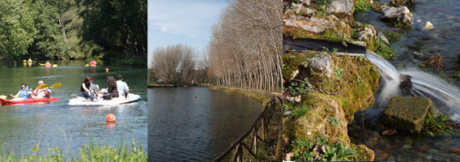
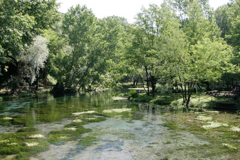
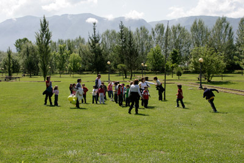

Il parco del rio Grassano prende il nome dal fiume che nasce e scorre al suo interno e che confluisce, qualche chilometro a valle, nel Calore. Di notevole interesse naturalistico, il parco del rio Grassano rappresenta un’oasi incontaminata e ricca di vegetazione, indicata fin dai tempi antichi come piccola perla naturale e ricordata dagli storici soprattutto per la freddezza e limpidezza delle acque. Le sorgenti del Rio Grassano sono ubicate alle pendici del rilievo calcareo di monte Pugliano, al confine del territorio comunale di Telese Terme. La quota media è di 60 m slm e la portata media complessiva del fronte sorgentizio è di circa 6000 litri al secondo. Data la portata, Rio Grassano è considerato un vero e proprio fiume, come d’altronde stabilito dall’ufficio genio Civile di Benevento-Provveditorato Regionale alle opere pubbliche. La nascita delle sorgenti si può far risalire a circa 20 milioni di anni fa, quando nel periodo geologico denominato Miocene, vi fu la messa in posto degli orogeni che contornano la Valle Telesina (Monte Camposauro, Monte Taburno, Monte Acero, Matese ecc…). I movimenti orogenetici successivi (Pliocene) diedero luogo all’Appennino meridionale consentendo la creazione di zone rialzate (horst) e zone ribassate (graben) disposte in maniera caotica. Tra gli horst si segnalano monte Acero, Monticello, la Rocca e monte Pugliano; tra i graben la Valle del Basso Calore e quella del Medio Volturno, raccordate tra loro dalla Valle Telesina. Le sorgenti del rio Grassano presentano, durante il loro percorso, canneti e piante igrofite (come salici e pioppi), tra le quali nidificano uccelli acquatici.
Esteso su una superficie di circa 120.000 metri quadri, il parco offre ai suoi visitatori un’infinità di scorcisuggestivi e giochi di trasparenze, favorite dai raggi del sole che filtrano attraverso gli alti arbusti. All’interno del parco è possibile trascorrere una piacevole giornata usufruendo delle aree attrezzate e dei numerosi servizi offerti dalla società di gestione. Il ristorante, l’area picnic, il bar, il parco giochi, il campo sportivo, le aree espositive ed il centro convegni unitamente alla area concerti e ai bungalow della Selva di Sotto, offrono innumerevoli possibilità di svago e intrattenimento durante tutto l’anno.
vorrei avere informazioni sui costi dei tavoli,sugli orari e sulla disponibilità al parco per il giorno 26-04-2011 dato che al telefono non mi risponde mai nessuno
per informazioni può contattare il sito http://www.parcodelgrassano.it (dove trova notizie in merito al 26/04/2011) oppure può telefonare al numero del parco 0824 976475.
grazie.
e un vero schifo il pic nik viene invaso dalle mosce mi sembra l invasione barbariche mai viste tante mosche in vita mia come si appoggiava il piatto se lo mangiavano le mosche per me ha chiuso il parco grassano
buonasera!
purtroppo non è la pro loco che si occupa della gestione del parco ma una società privata. per le rimostranze, la rimando al sito http://www.parcodelgrassano.it.
saluti.